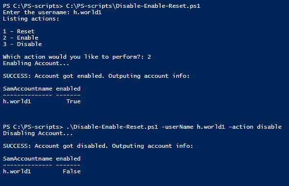

Powershell: Reset Password, Enable, and Disable User Accounts in Active Directory
Date: Febuary 12, 2021
Go To:
SummaryCmdlet(s)
Details
Full Script Code
Summary:
An Object Oriented script to automate the tasks of Resetting Passwords, Enabling, and Disabling accounts in Active Directory. Prompts user to select which of the three action to perform. The script also allows parameters to be given, which will bypass the options and go perform the given actions. The Cmdlets used to perform these actions are Enable-ADAccount, Set-ADAccountPassword, and Disable-ADAccount.
Cmdlet(s):
Enable-ADAccount
Enables an Active Directory account, declared with ‘Identity’ Parameter.
Ex. Enable-ADAccount -Identity User1
More info on Microsoft’s website:
Microsoft Enable Accounts
Disable-ADAccount
Disable an Active Directory account, declared with ‘Identity’ Parameter.
Ex. Disable-ADAccount -Identity User1
More info on Microsoft’s website:
Microsoft Disable Accounts
Set-ADAccountPassword
Change the Password to an account, declared with ‘Identity’ Parameter. Password needs to be
declared with ‘Reset’ and ‘NewPassword’ and provided as a secure string.
'Reset' allows the change
without having to provide the old password.
Ex. Set-ADAccountPassword -Identity User1 -Reset -NewPassword (ConverTo-SecureString -AsPlainText “Password123” -Force)
More info on Microsoft’s website:
Microsoft Reset Password
Details:
We'll start with setting the parameters of 'action' and 'username'. ‘Action’ will be the variable
used to hold the user’s choice, as they will be prompted for a decision to either enable, create or
reset. Username will be the SamAccountName found in Active Directory.
'Import-Module ActiveDirectory' is required to perform actions to the Active Directory. The object
'Employee' will be created later in the script, for now we’ll just declare it and hold it in a
variable object of ‘userObj’. This will make it easier when we pass properties to the object.
‘Password’ will hold the password you want to set when it gets reseted. Later we will set it
to where the user will be prompt to change thier password at first login. Next, we pass
the password to the ‘Employee’ class through the variable we declared earlier of ‘userObj’
#performs actions on an Active directory Acount
#reset password,enable,disable
[CmdletBinding()]Param (
$action = $null,
$userName = $null
)
Import-Module ActiveDirectory
$userObj = [Employee]::New()
$password = "TopSecret123!"
$userObj.password = $password
If the values of ‘username’ and ‘action’ were not provided as parameters then we will ask the user for them. Example, the first 'if' statment says if '$username' is null '!' then perform the following command of 'enter the username'. Then pass the ‘username’ to the object we are using which will be used as the SamAccountName when we perform the Cmdlets.
#get username and pass to object
if(!$username){
$username = Read-Host "Enter the username"
}
#ask user which option to perform
if(!$action){
Write-host "Listing actions: `n`n1 - Reset `n2 - Enable `n3 - Disable`n"
$action = Read-Host "Which action would you like to perform?"
}
$userObj.SamName = $username
The ‘action’ variable will now be passed through a switch statement to decide which commands to perform.
Switches are very similar to if/else statements in that they are condition handlers. The important difference
is switch statements process a higher number of conditions more efficiently than if/else.
Even though only three choices are presented, This script can
grow to perform other actions such as create,delete, provide general info, etc. To prepare for that, I
chose a switch plus I personally think they look a lot cleaner.
The output presented at the start (such as ‘1 - Reset)’ will either get an input of ‘1’ or ‘reset’ from the user.
In order to accept two values, I like to use the ‘-regex’ parameter. At a high level it’s
pretty much like using a ‘-match’ option where it matches a variable to the switch options. It's like if regex is
saying if 'x' or 'y' is in 'z' do these commands. In this case, if '1' or 'enable' is in '$action'
Try/Catch statements are great for handling errors. Basically it tries the commands in the try block, but
if at any point it produces an error, it will immediately go to the ‘catch’ block and perform those given commands.
When it goes to the ‘catch’ block you can output the error with ‘$_’ which in this case holds the current error.
We can now call the method to reset the password then output the user’s info with the
Get-ADUser Cmdlet. Selecting only the related properties to be outputted. ‘fl’ formats the output in a
list. We will go through the ‘ResetPassword’ method when we get to the Employee object.
#perform action that user chose
switch -regex ($action){
"(1|Reset)"{
try {
$userObj.ResetPassword()
get-aduser $username -Properties passwordlastset,lockedout |
select SamAccountName, Enabled, PasswordLastSet,Lockedout |fl
}
catch {
Write-Host "`nFAILED: Password did NOT get reset. Outputting error: "-ForegroundColor Red
$_
}
break}
Continuing in the 'switch' decisions we provide the decisions for ‘2 Enable’ and
‘3 Disable’. Using ‘try/catch’ we try to perform the method call to perform the related
commands, and output the related info with ‘Get-Aduser’. If any errors occur during this,
it will go to the ‘catch’ block and perform those actions.
‘Default’ is called whenever none of the other switch options are used. It’s like the
‘else’ in if/else statements. Once all the switch ends, we clear the variables with ‘clear-variable’.
"(2|Enable)"{
try {
$userObj.EnableUser()
Get-ADuser $username | Select SamAccountname, enabled
}
catch {
Write-Host "`nFAILED: Account did not get enabled. Outputting error: "-ForegroundColor Red
$_
}
break}
"(3|Disable)"{
try {
$userObj.DisableUser()
Get-ADuser $username | Select SamAccountname, enabled
}
catch {
Write-Host "`nFAILED: Account did not get disabled. Outputting error: "-ForegroundColor Red
$_
}
break}
default{
write-host "$action is an invalid option"
}
}
#clear variables
clear-variable -Name action,userName,password
Now we get to the ‘Employee’ object that was called at the beginning. First set the property names,
followed by the methods. The methods that will be used will perform actions of
resetting passwords, enabling and disabling accounts.
‘$this’ is just an easy way to refer to whichever object it’s inside. Ex. read
‘$this.SamName’ as ‘Employee.SamName’
The ‘RestPassword’ method is declared as a ‘void’ as we will not be returning anything.
Outputs will be given to let the user know which step is being performed.
Note: If at any point there are failures, it will stop and immediately go to the ‘catch’
block from the main script.
Set-ADAccountPassword will be used to set the password for the user that is declared with
‘Identity’. The new password is set with ‘NewPassword’ and we will use ‘Reset’ so that
we don’t have to provide the old password too. The password has to be given as a secure
string which can be done with ‘ConvertTo-Secure-String’.
It’s recommended to force the user to change it once they log in. If not they can
put it off and end up keeping that default password.
To force them to change we will use the ‘Set-Aduser’ Cmdlet which allows modifications
to already existing accounts. Here we modify the ‘ChangePasswordAtLogon’
property to ‘$true’.
Whenever users input their passwords too many times they will probably get their
accounts locked. So we’ll just unlock it to avoid that issue with ‘Unlock-ADAccount’
then provide the username.
############CLASS###########
class Employee {
[string]$SamName
[string]$password
[void]ResetPassword() {
Write-Host "resetting password...`n"
Set-ADAccountPassword -Identity $this.SamName -NewPassword `
(ConvertTo-SecureString -AsPlainText $this.password -Force) -Reset
Set-ADUser $this.SamName -ChangePasswordAtLogon $true
Write-Host "`nCompleted resetting the password"
Unlock-ADAccount -Identity $this.SamName
Write-Host "Account is also unlocked"
Write-Host "SUCCESS: Password reset, and account unlocked. Outputting info:"
}
We end the object with the Enable and Disable methods. Pretty simple commands,
so there's not much explanation needed. Enable-ADAccount enables the given account,
and Disable-ADAccount disables the given account.
Just as bonus info, if you need to disable or enable everyone in an OU
use a command such as:
Get-Aduser -filter ‘Name -like “*”’
-SearchBase “OU=Finance,OU=Users, DC=villaroot,DC=com” | Disable-ADAccount
Essentially Get-Aduser grabs all the accounts provided in the given SearchBase,
then it disables whatever it grabs with Disable-ADAccount. change to Enable-ADAccount
if you want enable instead.
[void]EnableUser(){
Write-Host "Enabling Account...`n"
Enable-ADAccount -Identity $this.SamName
Write-Host "SUCCESS: Account got enabled. Outputting account info:"
}
[void]DisableUser() {
Write-Host "Disabling Account...`n"
Disable-ADAccount -Identity $this.SamName
Write-Host "SUCCESS: Account got disabled. Outputting account info:"
}
}
Here's a snippet of the code running through the enable option without and disable with parameters being given.

Thanks for reading this article using Powershell to Reset Passwords,
Disable, and Enable Users in Active Directory while using objects!
Full Script Code:
#performs actions on an Active directory Acount
#reset password,enable,disable
[CmdletBinding()]Param (
$action = $null,
$userName = $null
)
Import-Module ActiveDirectory
$userObj = [Employee]::New()
$password = "TopSecret123!"
$userObj.password = $password
#get username and pass to object
if(!$username){
$username = Read-Host "Enter the username"
}
#ask user which option to perform
if(!$action){
Write-host "Listing actions: `n`n1 - Reset `n2 - Enable `n3 - Disable`n"
$action = Read-Host "Which action would you like to perform?"
}
$userObj.SamName = $username
#perform action that user chose
switch -regex ($action){
"(1|Reset)"{
try {
$userObj.ResetPassword()
get-aduser $username -Properties passwordlastset,lockedout |
select SamAccountName, Enabled, PasswordLastSet,Lockedout |fl
}
catch {
Write-Host "`nFAILED: Password did NOT get reset. Outputting error: "-ForegroundColor Red
$_
}
break}
"(2|Enable)"{
try {
$userObj.EnableUser()
Get-ADuser $username | Select SamAccountname, enabled
}
catch {
Write-Host "`nFAILED: Account did not get enabled. Outputting error: "-ForegroundColor Red
$_
}
break}
"(3|Disable)"{
try {
$userObj.DisableUser()
Get-ADuser $username | Select SamAccountname, enabled
}
catch {
Write-Host "`nFAILED: Account did not get disabled. Outputting error: "-ForegroundColor Red
$_
}
break}
default{
write-host "$action is an invalid option"
}
}
#clear variables
clear-variable -Name action,userName,password
############CLASS###########
class Employee {
[string]$SamName
[string]$password
[void]ResetPassword() {
Write-Host "resetting password...`n"
Set-ADAccountPassword -Identity $this.SamName -NewPassword `
(ConvertTo-SecureString -AsPlainText $this.password -Force) -Reset
Set-ADUser $this.SamName -ChangePasswordAtLogon $true
Write-Host "`nCompleted resetting the password"
Unlock-ADAccount -Identity $this.SamName
Write-Host "Account is also unlocked"
Write-Host "SUCCESS: Password reset, and account unlocked. Outputting info:"
}
[void]EnableUser(){
Write-Host "Enabling Account...`n"
Enable-ADAccount -Identity $this.SamName
Write-Host "SUCCESS: Account got enabled. Outputting account info:"
}
[void]DisableUser() {
Write-Host "Disabling Account...`n"
Disable-ADAccount -Identity $this.SamName
Write-Host "SUCCESS: Account got disabled. Outputting account info:"
}
}